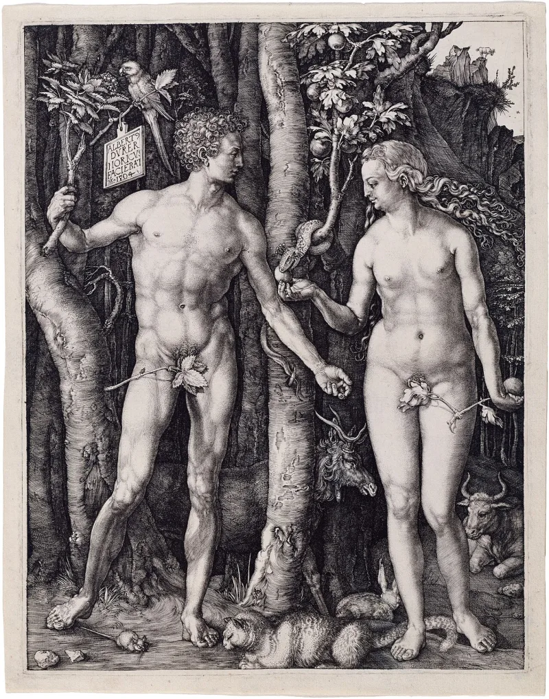

Brigham Young taught that Adam is God
AdmittedTheir own church publications admit these facts. You can make this point from LDS sources alone.
What Brigham Young taught
On 9 April 1852, in general conference, he taught that Adam "is our Father and our God, and the only God with whom we have to do." It is in Journal of Discourses 1:50-51.
How long he taught it
Over two decades. In 1873 he said that "Adam is my father" was doctrine God had revealed to him.
In 1877 he had it put into the temple lecture at the veil in the St George Temple. L.
John Nuttall recorded that in his journal on 7 February 1877.
What it contradicts
Genesis 2:7, where Adam is a creature formed by God. Hosea 11:9, where God is not a man.
And Latter-day Saint scripture itself: D&C 27:11 and 107:53-55 identify Adam as the archangel Michael, who is under God.
What the church did
In 1976 President Spencer W. Kimball told general conference: "the Adam-God theory… We denounce that theory and hope that everyone will be cautioned against this and other kinds of false doctrine."
Their answer, at full strength
FAIR says Young's sermons survive only in imperfect transcriptions. It says he taught other things that do not fit a strong Adam-God reading.
And it says the teaching was never canonised by common consent, so it was one man's speculation rather than church doctrine. Kimball's denunciation is presented as the system working: the living church corrects itself, and doctrine is set by scripture and the united voice of the First Presidency, not by every pulpit statement of a past president.
What to say
"Kimball called it false doctrine. Brigham Young taught it in the temple.
How do you hold both?"



How they answer this — at its strongest
The sermons survive in rough transcripts, and it was never made canon.
FAIR argues that Young's sermons survive only in rough transcripts. It argues that he taught other things that do not fit a strong Adam-God reading. And it notes that the teaching was never made canon by common consent.
On that account it was one man's private speculation. It was not church doctrine.
Kimball's 1976 denunciation is presented as the system working. The living church corrects itself. Doctrine is set by scripture and by the united voice of the First Presidency. It is not set by every pulpit remark of a past president.
The verdict
They admit this: one prophet called another prophet's temple teaching false doctrine.
Kimball's 1976 denunciation concedes the substance. Something Young taught as doctrine is now officially 'false doctrine'.
The misreporting defence fails against several independent records. The Journal of Discourses. Young's own reaffirmation in 1873. Wilford Woodruff's journal. And the St George temple lecture minutes of 7 February 1877.
The remaining move, that it was never canonised, rescues the church's doctrinal process only by conceding the evangelistic point. A president of the church, speaking as prophet, taught for 25 years, including inside the temple, something the church now denounces.
That collapses 'the prophet will never lead the church astray' as a working guarantee.
Sources
- MRM: 'Adam-God' — Brigham Young's Theory or Divine Doctrine?
- Mormonr: Adam-God Theory (primary documents)
- FAIR: Brigham Young and Adam-God theory
- Institute for Religious Research: Adam-God Doctrine